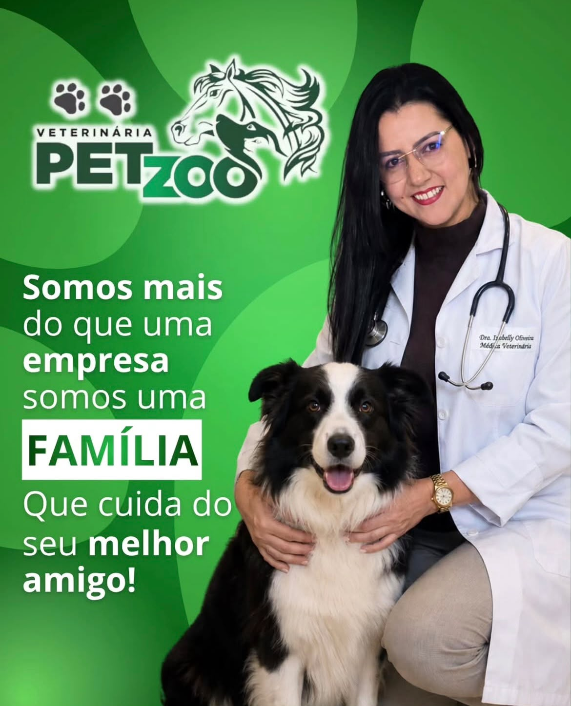
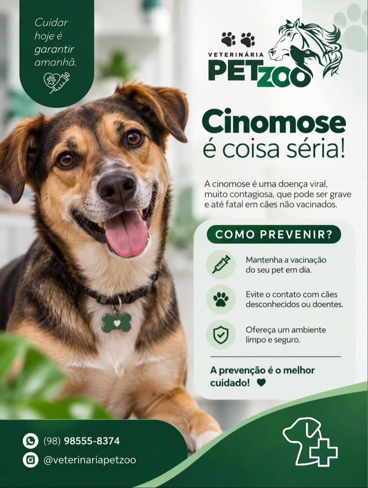
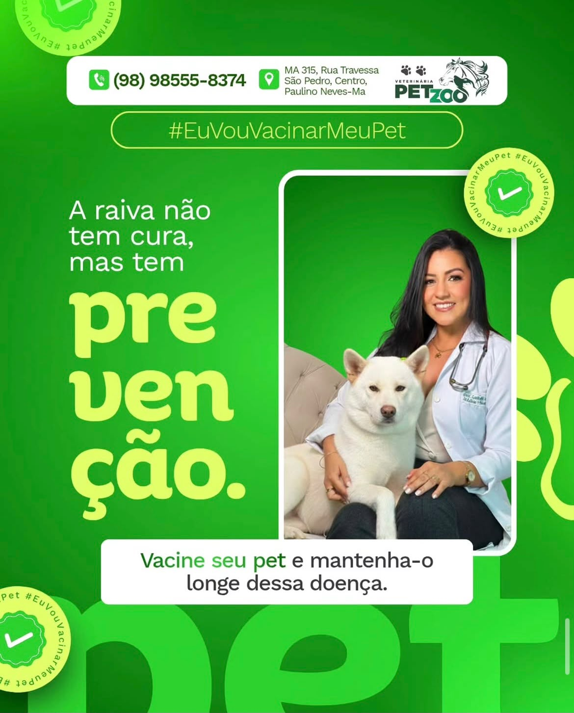

01
Consultas
Avaliação clínica completa para cães, gatos e animais de grande porte, com orientação clara para o tutor.
Clínica e farmácia veterinária em Paulino Neves, Maranhão. Consultas, exames, cirurgias e medicações com atendimento próximo, honesto e cheio de carinho pelo seu animal.
SERVIÇOS
Atendemos cães, gatos, animais de grande porte e de produção. Tudo no mesmo lugar: diagnóstico, tratamento e os medicamentos para continuar o cuidado em casa.
Avaliação clínica completa para cães, gatos e animais de grande porte, com orientação clara para o tutor.
Exames e coletas para fechar o diagnóstico com segurança antes de qualquer tratamento.
Procedimentos cirúrgicos, castração e pós-operatório acompanhado de perto.
Aplicação de medicamentos, vacinas e vermífugos, com o calendário do seu pet em dia.
Estoque variado de medicamentos e produtos para pets e animais de produção, com compra na loja.
Atendimento a equinos, bovinos e rebanhos, com visita e acompanhamento na propriedade.

QUEM CUIDA
A Petzoo é conduzida pela Dra. Isabelly Oliveira, médica veterinária, junto de uma equipe que conhece cada tutor e cada pet pelo nome. Aqui o atendimento é atencioso e dedicado, com preço justo e muito carinho pelo seu animal.
Além da clínica, mantemos uma farmácia veterinária com estoque variado para atender todos os tipos de animais, de cães e gatos a rebanhos.
“Cuidar hoje é garantir amanhã.”
PREVENÇÃO
Vacinação em dia, ambiente limpo e consultas de rotina evitam doenças graves como a cinomose e a raiva. Converse com a gente sobre o calendário de vacinas do seu pet.


Mantenha o protocolo anual do seu pet sem atrasos.
Ofereça um espaço limpo, seco e seguro em casa.
AVALIAÇÕES
Tratamento especializado, bom atendimento, preço justo... E o melhor muito carinho pelo seu Pet
Atendimento maravilhoso! Sempre que precisei esteve a minha disposição e sempre fez muito pela saúde dos meus pets. Super recomendo!
Loja de produtos veterinários com estoque surtido para atender todos os tipos de animais.
Um ambiente maravilhoso, com uma vet Top, atenciosa e dedicada.
Muito boa, minhas cachorrinhas adoram as meninas.
CONTATO E LOCALIZAÇÃO
Mande uma mensagem com o nome do seu pet, a idade e o que está acontecendo. Respondemos no horário de atendimento.